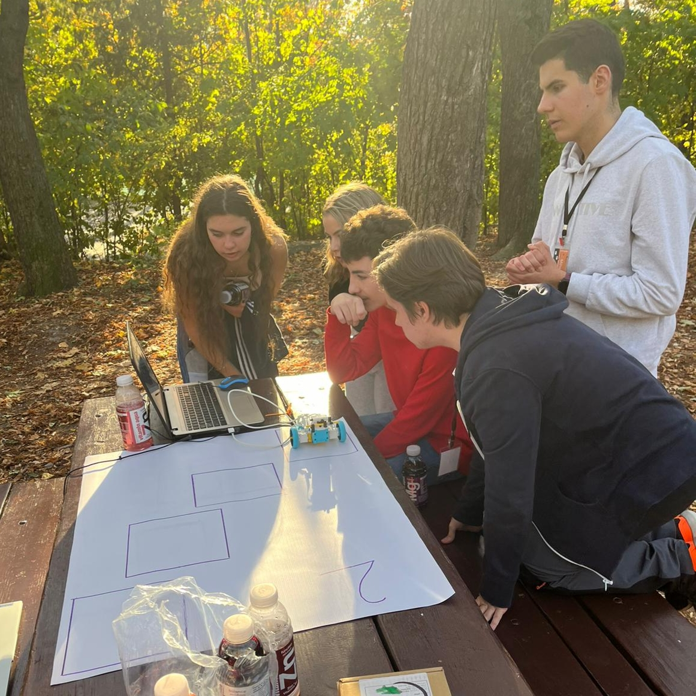
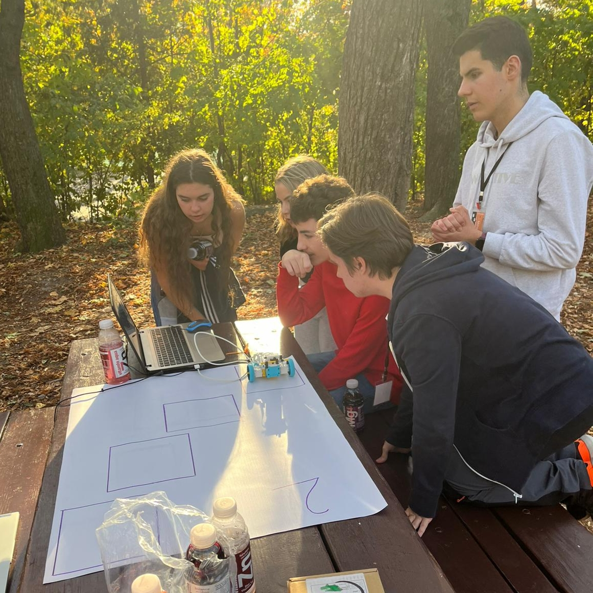
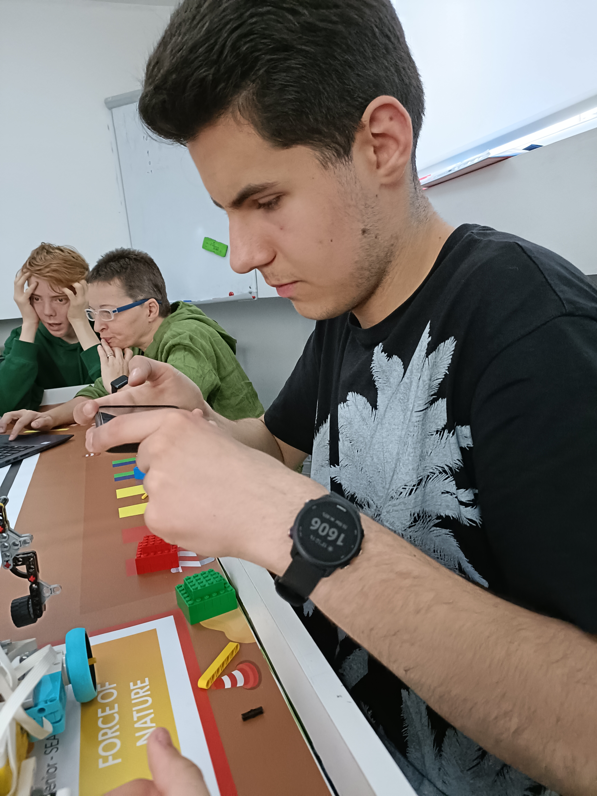
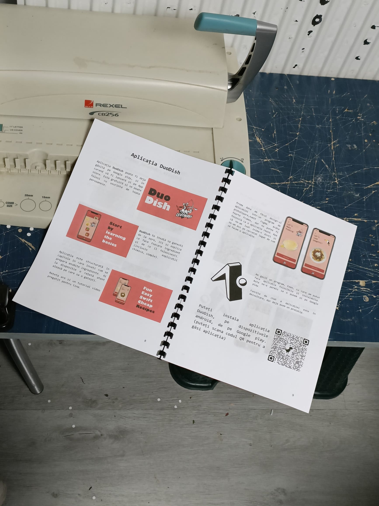
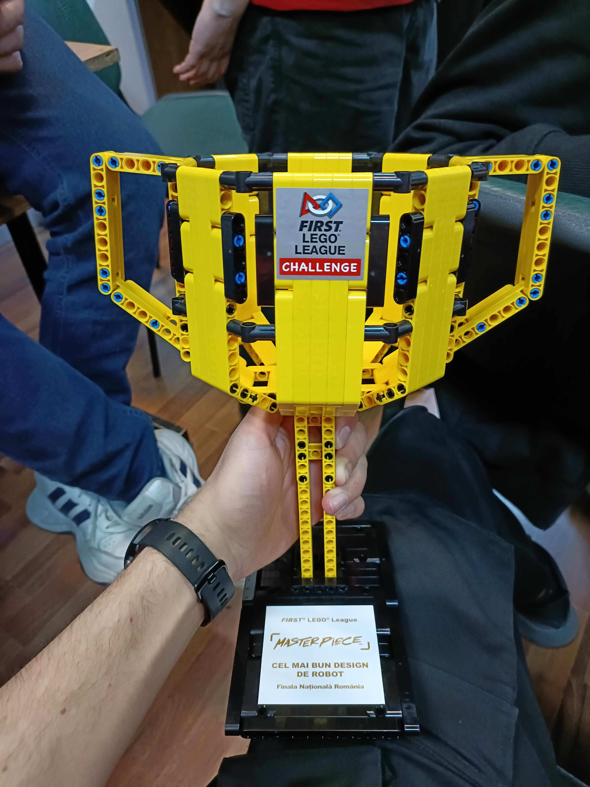
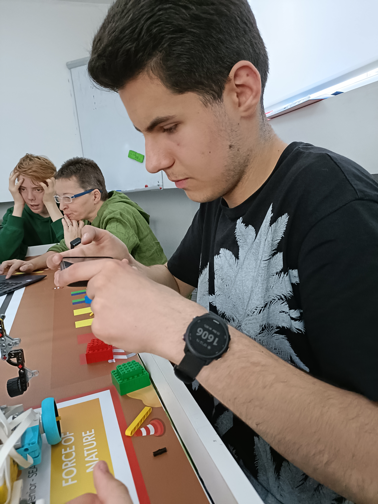
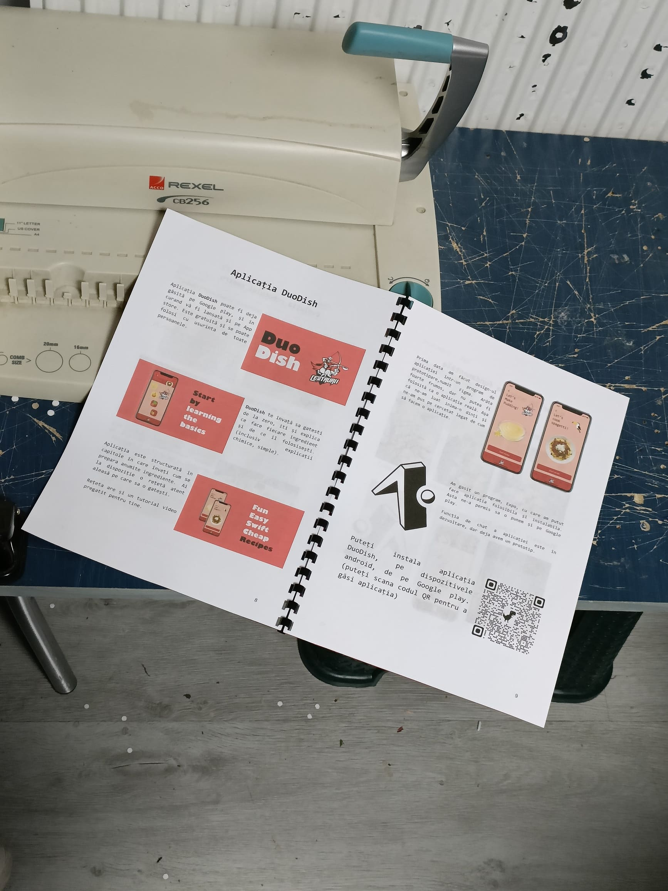
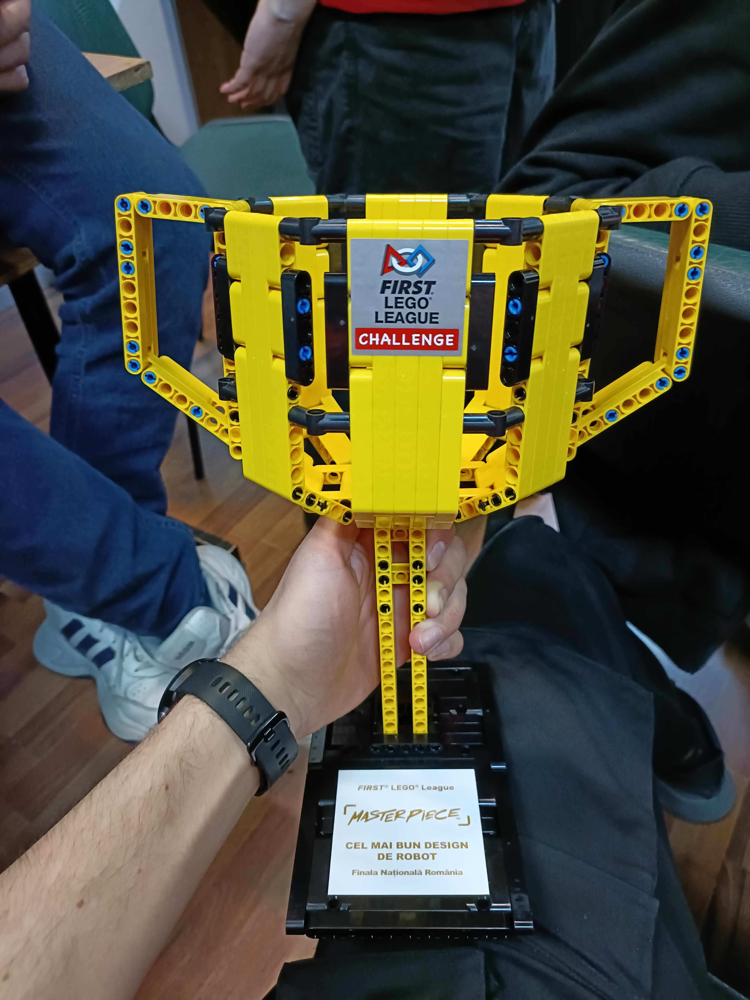

Călătoria mea de 5 ani
Totul a început acum 5 ani, dintr-o curiozitate simplă față de tehnologie, care s-a transformat rapid într-o pasiune centrală. Imaginea alăturată surprinde primele mele interacțiuni cu domeniul, momentul în care am deschis primul laptop dedicat programării și am scris primele linii de cod. De atunci, am parcurs un drum lung, plin de provocări tehnice, nopți nedormite și satisfacția lucrului bine făcut.
🤖 FTC (FIRST Tech Challenge)
Competiția FTC a reprezentat maturizarea mea în robotică. Aici am învățat nu doar inginerie, ci și management și marketing. Mai jos sunt momente cheie din sezonul Centerstage: sesiunile intense de brainstorming alături de mentori, prezentarea robotului și a viziunii noastre în fața sponsorului Manifatture și asamblarea terenului oficial de joc.
Educație și Comunitate
Pe lângă construcția roboților, o mare parte a activității noastre a fost dedicată educației comunitare.
🌲 Tabăra Dămuc:
Problemă: Elevii din mediul rural au acces extrem de limitat la tehnologie și la concursurile din oraș.
Soluție: Am organizat ateliere unde le-am arătat cum să folosească roboți de tip Lego Spike și le-am donat două seturi complete pentru a le permite înscrierea la competiția FLL.
🗺️ Treasure Hunt Piatra Neamț:
Problemă: Metodele tradiționale de învățare nu stârnesc întotdeauna interesul pentru lucrul în echipă.
Soluție: Am creat un Treasure Hunt tehnologic cu roboți. Aceasta a oferit o experiență interactivă, încurajând participanții să descopere concepte tehnologice prin joacă.
 


🛠️ FLL (FIRST Lego League)
În sezonul Masterpiece, am dus inovația la un alt nivel. Am participat la etapa națională de la Chișinău cu un robot complex, construit și programat pentru precizie maximă. Munca din spatele cortinei a fost intensă, după cum se vede în imaginile din laborator.
Pentru proiectul de inovare, am dezvoltat aplicația DuoDish, menită să rezolve probleme reale legate de nutriție și gătit. Eforturile noastre au fost recunoscute la etapa națională de la Brașov, unde am câștigat trofeul pentru Cel mai bun Design.
 





🌍 WRO (World Robot Olympiad)
Participarea la WRO a necesitat o abordare inginerească riguroasă. Am proiectat un robot autonom bazat pe platforma Lego Spike, specializat în manipularea obiectelor.
Robotul dispune de motoare integrate pentru locomoție precisă și un braț robotic de tip cremalieră (rack and pinion), proiectat de noi pentru a ridica și transporta blocurile de joc. Pentru orientare și identificarea obiectelor, am integrat un senzor de culoare (Color Sensor) de înaltă precizie.